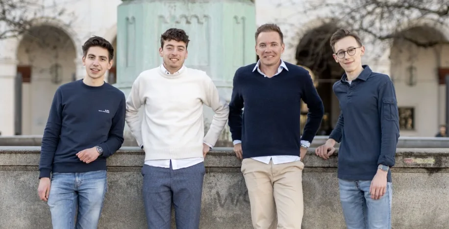

Von Studierenden für Studierende

München – Mit einem innovativen Konzept und einem Startkapital von 25.000 Euro haben Moritz, David, Stefan und Thomas in München eine neue Ära für studentische Arbeitsverhältnisse eingeläutet: die Gründung der uniworks GmbH. Dieses junge Unternehmen stellt sich als zukunftsweisender Arbeitgeber dar, der Studierenden flexible Arbeitsmöglichkeiten bei einer Vielzahl von Partnerunternehmen bietet.
Unter der Leitung von Geschäftsführer Moritz verfolgt uniworks das Ziel, eine dynamische und anpassungsfähige Arbeitsumgebung zu schaffen, die perfekt auf die Bedürfnisse und Zeitpläne von Studierenden zugeschnitten ist. „Wir wollen eine Brücke zwischen dem akademischen Leben und der Berufswelt bauen, indem wir Studierenden die Chance geben, flexibel und unbürokratisch einen Job neben dem Studium auszuüben“, erklärt Moritz.
Das Team hinter uniworks besteht neben Moritz aus den Studierenden David, Stefan und Thomas. Sie alle widmen sich der Neugestaltung des Arbeitsmarkts für ihre Kommilitonen. Als Studierende verstehen sie genau, was ihre Mitstudierenden brauchen: faire Vergütung, einfache Prozesse und flexible Arbeitszeiten. uniworks garantiert nicht nur einen Mindestlohn von 15 Euro pro Stunde (mittlerweile 16 Euro), sondern betont auch die Leichtigkeit und Flexibilität, die für das Studierendenleben essentiell sind. „Unsere eigene Erfahrung als Studierende zeigt uns, wie wichtig eine unkomplizierte und gerechte Bezahlung ist. Mit unserem Mindestlohn von 15 Euro (mittlerweile 16 Euro) setzen wir ein starkes Zeichen für die Wertschätzung der Arbeit und die Bedürfnisse der Studierenden“, unterstreicht David.
Die Gründung der uniworks GmbH ist nur der Anfang einer spannenden Reise. Das Unternehmen plant bereits, seine Dienstleistungen über München hinaus auszuweiten und die Landschaft der studentischen Arbeitswelt nachhaltig zu prägen.